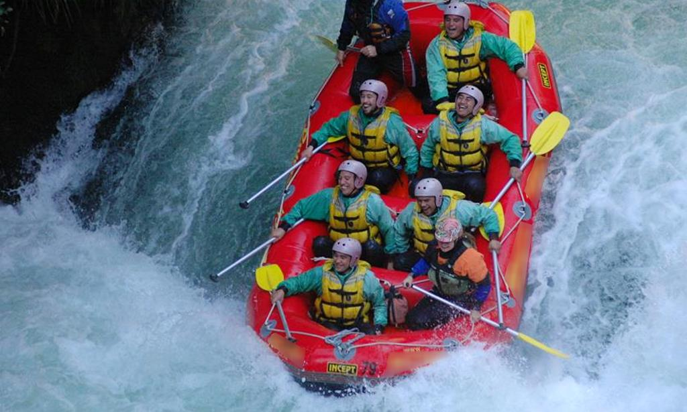
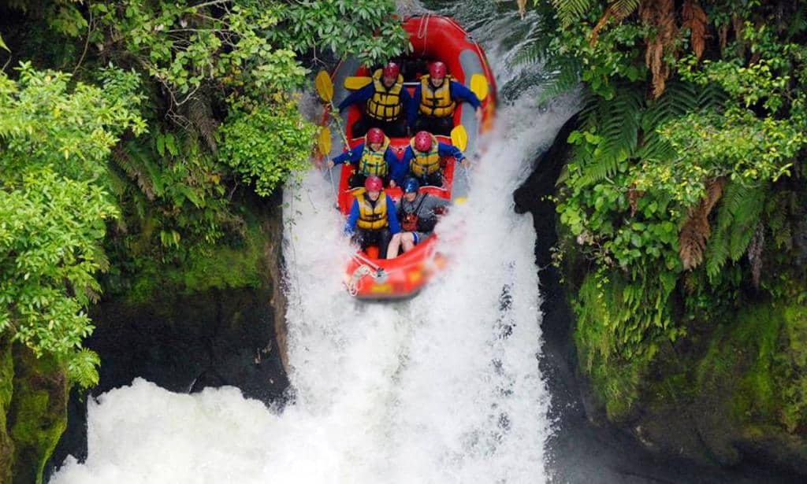
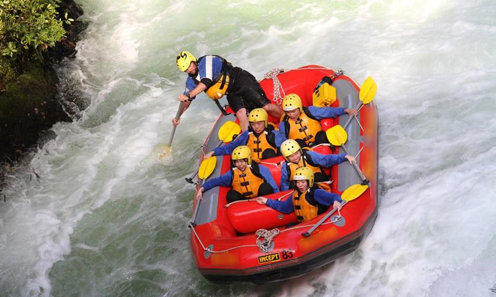

Escolha a sua Aventura
Corredeira da Família (Nível I - II)
O passeio perfeito para trazer crianças e iniciantes. O trajeto conta com águas tranquilas intercaladas com pequenas quedas emocionantes, permitindo observar a fauna local e nadar em pontos calmos do rio.
Duração: 2 horas | Idade Mínima: 6 anos

Cânion do Trovão (Nível III - IV)
Para quem busca o equilíbrio exato entre adrenalina constante e paisagens de tirar o fôlego. Navegue por desfiladeiros estreitos com quedas rápidas que exigirão trabalho em equipe coordenado pelo guia.
Duração: 3.5 horas | Idade Mínima: 14 anos

Desafio Extremo (Nível V)
Exclusivo para aventureiros experientes e caçadores de adrenalina pura. Velocidade máxima, quedas verticais severas e ondas imensas em um dos rios mais técnicos do país. Teste seus limites conosco!
Duração: 4 horas | Idade Mínima: 18 anos

Tabela Comparativa de Trajetos
| Passeio | Dificuldade | Duração | Preço por Pessoa |
|---|---|---|---|
| Corredeira da Família | Fácil (Nível I-II) | 2 Horas | R$ 120,00 |
| Cânion do Trovão | Moderado (Nível III-IV) | 3.5 Horas | R$ 180,00 |
| Desafio Extremo | Difícil (Nível V) | 4 Horas | R$ 250,00 |
Ficou com alguma dúvida sobre as restrições médicas ou gostaria de reservar para grupos grandes?
Entre em Contato Conosco